Note
Go to the end to download the full example code.
Processing NMR spectra (slicing, baseline correction, peak picking, peak fitting)
Various examples of processing NMR spectra
Requires the official spectrochempy-nmr plugin.
Install with: pip install spectrochempy[nmr].
Import API
import spectrochempy as scp
Importing a 2D NMR spectra
Define the folder where are the spectra
datadir = scp.preferences.datadir
nmrdir = datadir / "nmrdata"
dataset = scp.nmr.read(
nmrdir / "bruker" / "tests" / "nmr" / "topspin_2d" / "1" / "pdata" / "1" / "2rr"
)
Analysing the 2D NMD dataset
Print dataset summary
Plot the dataset
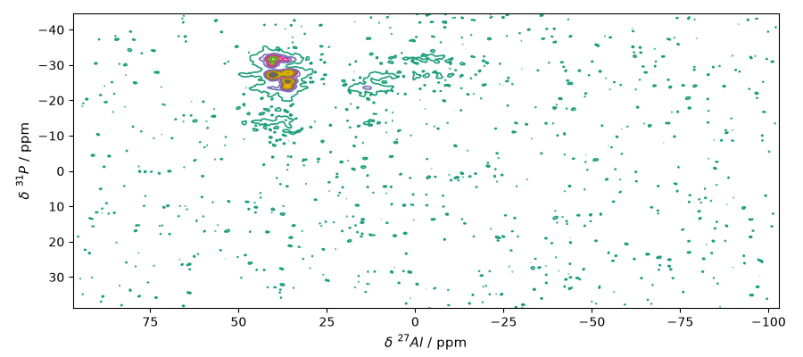
Extract slices along x
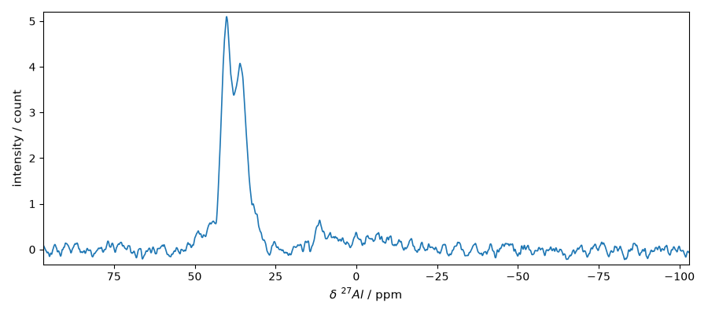
Baseline correction of this slice Note that only the real part is corrected
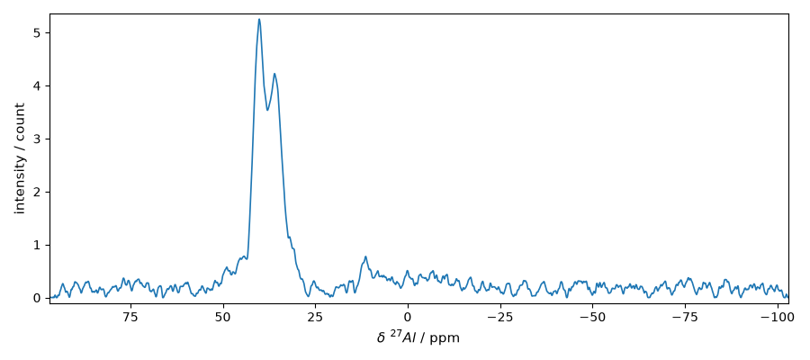
apply this correction to the whole dataset
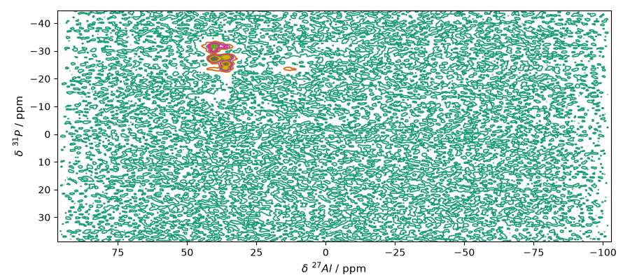
Select a region of interest
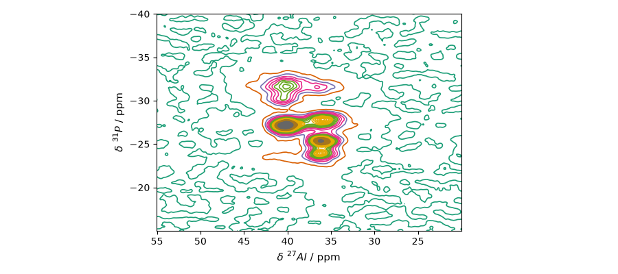
Extract slices along x
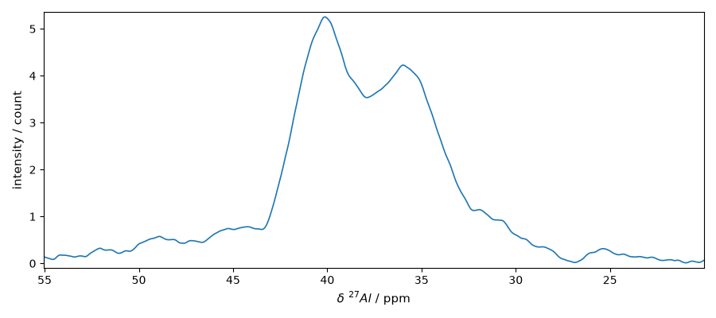
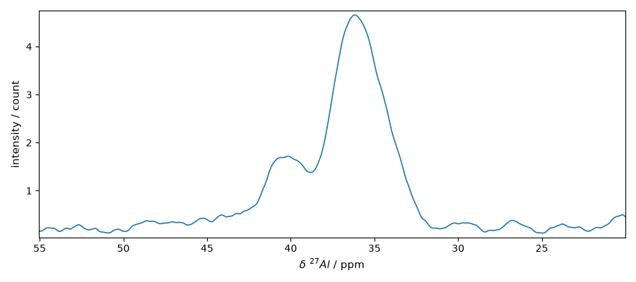
plot two slices on the same figure
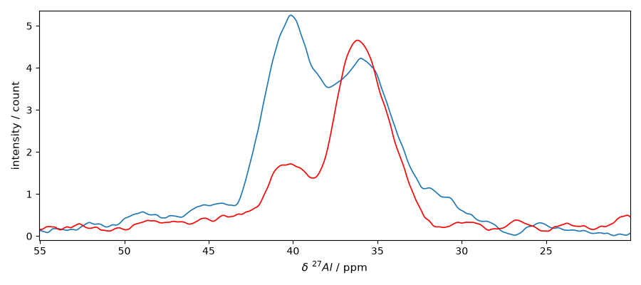
Now slice along y
IMPORTANT: note that when the slice is along y, this results in a column vector of shape (308, 1). When an NDDataset method is applied to this slice, such as a baseline correction, it will be applied by default to the last dimension [rows] (in this case the dimension of size 1, which is not what is generally expected). To avoid this, we can use the squeeze method to remove this dimension or transpose the slice to obtain a vector of rows of shape (1, 308)
s3 = s3.squeeze()
s4 = s4.squeeze()
plot the two slices on the same figure
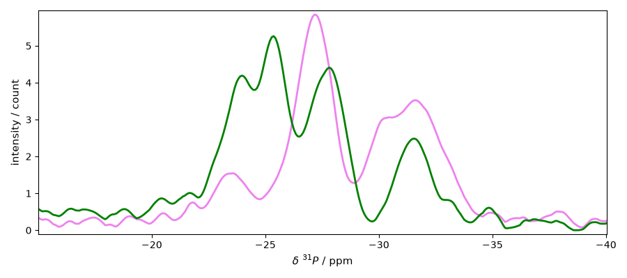
Peak picking
plot the position of the peaks For this we will define a plot function that we be reused later
def plot_with_pp(s, peaks):
ax = s.plot() # output the spectrum on ax. ax will receive next plot too;
pks = peaks + 0.2 # add a small offset on the y position of the markers
_ = pks.plot_scatter(
ax=ax,
marker="v",
color="black",
clear=False, # we need to keep the previous output on ax
data_only=True, # we don't need to redraw all things like labels, etc...
ylim=(-0.1, 7),
)
for p in pks:
x, y = p.coord(-1).values.m, (p + 0.2).values.m
ax.annotate(
f"{x:0.1f}",
xy=(x, y),
xytext=(-5, 5),
rotation=90,
textcoords="offset points",
)
plot_with_pp(s2, peaks)
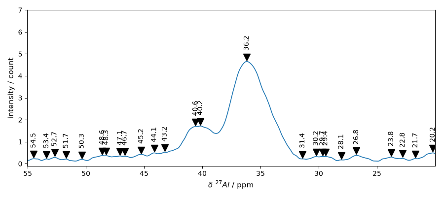
Set some parameters to get less but significant peaks
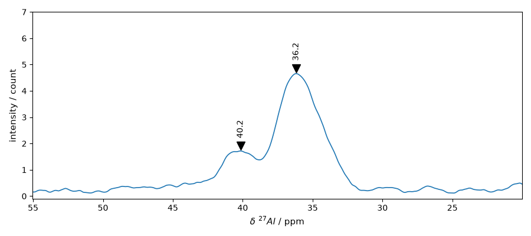
Now look in the other dimension using slice s4
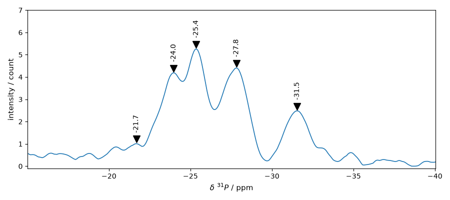
Peak fitting
Fit parameters are defined in a script (a single text as below)
script = """
#-----------------------------------------------------------
# syntax for parameters definition:
# name: value, low_bound, high_bound
# available prefix:
# # for comments
# * for fixed parameters
# $ for variable parameters
# > for reference to a parameter in the COMMON block
# (> is forbidden in the COMMON block)
# common block parameters should not have a _ in their names
#-----------------------------------------------------------
#
COMMON:
$ commonwidth: 1, 0, 5
$ commonratio: .5, 0, 1
MODEL: LINE_1
shape: voigtmodel
$ ampl: 1, 0.0, none
$ pos: -21.7, -22., -20
> ratio: commonratio
> width: commonwidth
MODEL: LINE_2
shape: voigtmodel
$ ampl: 4, 0.0, none
$ pos: -24, -24.5, -23.5
> ratio: commonratio
> width: commonwidth
MODEL: LINE_3
shape: voigtmodel
$ ampl: 4, 0.0, none
$ pos: -25.4, -25.8, -25
> ratio: commonratio
> width: commonwidth
MODEL: LINE_4
shape: voigtmodel
$ ampl: 4, 0.0, none
$ pos: -27.8, -28.5, -27
> ratio: commonratio
> width: commonwidth
MODEL: LINE_5
shape: voigtmodel
$ ampl: 4, 0.0, none
$ pos: -31.5, -32, -31
> ratio: commonratio
> width: commonwidth
"""
We will work here on the slice s4 (taken in the y dimension).
create an Optimize object
f1 = scp.Optimize(log_level="INFO")
Set parameters
f1.script = script
f1.max_iter = 5000
Fit the slice s4p
**************************************************
Result:
**************************************************
COMMON:
$ commonwidth: 1.8757, 0, 5
$ commonratio: 0.7139, 0, 1
MODEL: line_1
shape: voigtmodel
$ ampl: 0.4913, 0.0, none
$ pos: -21.0847, -22.0, -20
> ratio:commonratio
> width:commonwidth
MODEL: line_2
shape: voigtmodel
$ ampl: 3.1380, 0.0, none
$ pos: -23.7153, -24.5, -23.5
> ratio:commonratio
> width:commonwidth
MODEL: line_3
shape: voigtmodel
$ ampl: 4.2827, 0.0, none
$ pos: -25.3868, -25.8, -25
> ratio:commonratio
> width:commonwidth
MODEL: line_4
shape: voigtmodel
$ ampl: 4.1165, 0.0, none
$ pos: -27.7584, -28.5, -27
> ratio:commonratio
> width:commonwidth
MODEL: line_5
shape: voigtmodel
$ ampl: 2.3106, 0.0, none
$ pos: -31.5949, -32, -31
> ratio:commonratio
> width:commonwidth
Show the result
_ = s4p.plot()
ax = (f1.components[:]).plot(clear=False)
ax.autoscale(enable=True, axis="y")
# Plotmerit
som = f1.inverse_transform()
_ = f1.plotmerit(offset=2)
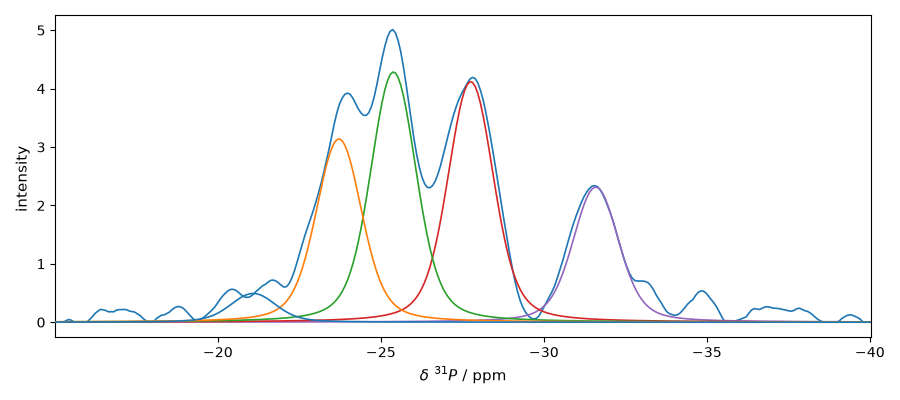
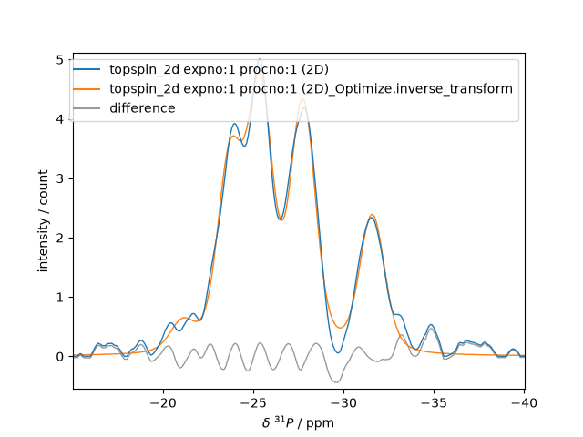
This ends the example ! The following line can be removed or commented
when the example is run as a notebook (ipynb).
# scp.show()
Total running time of the script: (0 minutes 11.195 seconds)